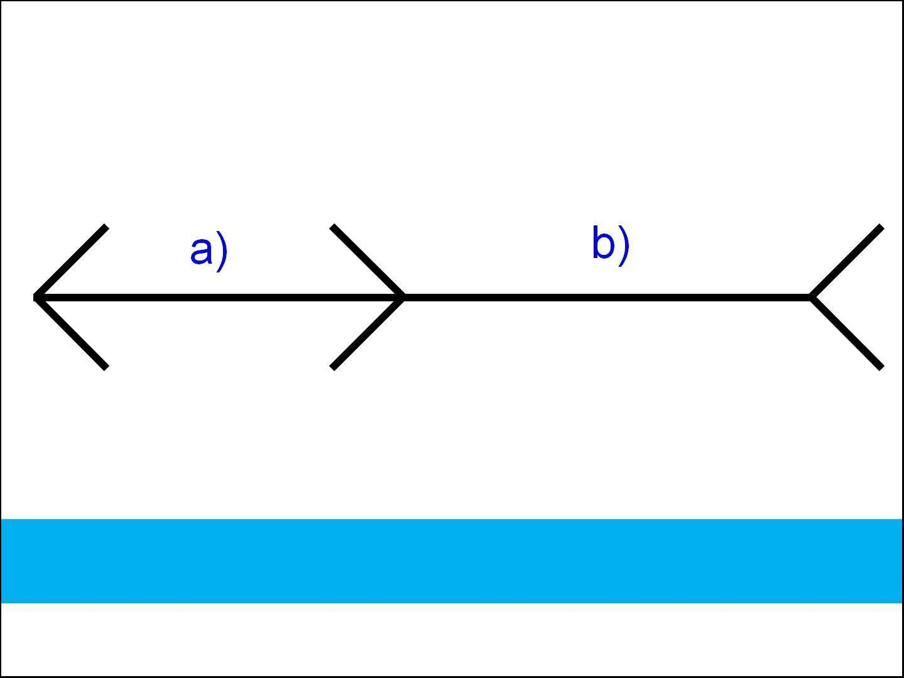
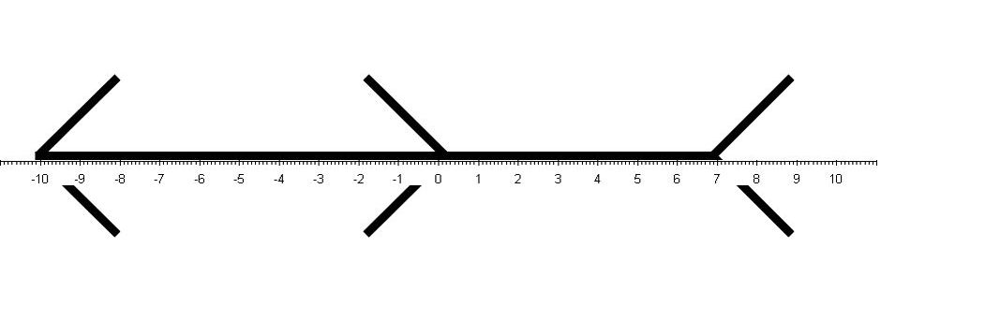
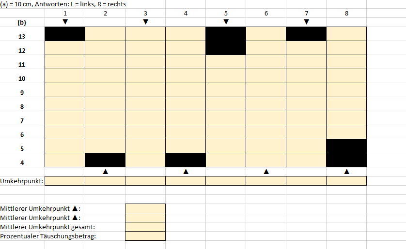
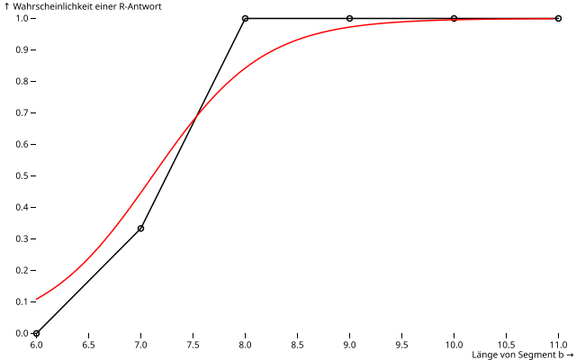

viewof v1 = Inputs.radio(["L", "R"], {label: "Durchgang 1"})
viewof v2 = Inputs.radio(["L", "R"], {label: "Durchgang 2"})
viewof v3 = Inputs.radio(["L", "R"], {label: "Durchgang 3"})
viewof v4 = Inputs.radio(["L", "R"], {label: "Durchgang 4"})
viewof v5 = Inputs.radio(["L", "R"], {label: "Durchgang 5"})
viewof v6 = Inputs.radio(["L", "R"], {label: "Durchgang 6"})
viewof v7 = Inputs.radio(["L", "R"], {label: "Durchgang 7"})
viewof v8 = Inputs.radio(["L", "R"], {label: "Durchgang 8"})
viewof v9 = Inputs.radio(["L", "R"], {label: "Durchgang 9"})
viewof v10 = Inputs.radio(["L", "R"], {label: "Durchgang 10"})
viewof v11 = Inputs.radio(["L", "R"], {label: "Durchgang 11"})
viewof v12 = Inputs.radio(["L", "R"], {label: "Durchgang 12"})
viewof v13 = Inputs.radio(["L", "R"], {label: "Durchgang 13"})
viewof v14 = Inputs.radio(["L", "R"], {label: "Durchgang 14"})
viewof v15 = Inputs.radio(["L", "R"], {label: "Durchgang 15"})
viewof v16 = Inputs.radio(["L", "R"], {label: "Durchgang 16"})
viewof v17 = Inputs.radio(["L", "R"], {label: "Durchgang 17"})
viewof v18 = Inputs.radio(["L", "R"], {label: "Durchgang 18"})
viewof v19 = Inputs.radio(["L", "R"], {label: "Durchgang 19"})
viewof v20 = Inputs.radio(["L", "R"], {label: "Durchgang 20"})
viewof v21 = Inputs.radio(["L", "R"], {label: "Durchgang 21"})
viewof v22 = Inputs.radio(["L", "R"], {label: "Durchgang 22"})
viewof v23 = Inputs.radio(["L", "R"], {label: "Durchgang 23"})
viewof v24 = Inputs.radio(["L", "R"], {label: "Durchgang 24"})
viewof v25 = Inputs.radio(["L", "R"], {label: "Durchgang 25"})
viewof v26 = Inputs.radio(["L", "R"], {label: "Durchgang 26"})
viewof v27 = Inputs.radio(["L", "R"], {label: "Durchgang 27"})
viewof v28 = Inputs.radio(["L", "R"], {label: "Durchgang 28"})
viewof v29 = Inputs.radio(["L", "R"], {label: "Durchgang 29"})
viewof v30 = Inputs.radio(["L", "R"], {label: "Durchgang 30"})
viewof v31 = Inputs.radio(["L", "R"], {label: "Durchgang 31"})
viewof v32 = Inputs.radio(["L", "R"], {label: "Durchgang 32"})
viewof v33 = Inputs.radio(["L", "R"], {label: "Durchgang 33"})
viewof v34 = Inputs.radio(["L", "R"], {label: "Durchgang 34"})
data = [
{x: 10, y: v1},
{x: 8, y: v2},
{x: 6, y: v3},
{x: 11, y: v4},
{x: 10, y: v5},
{x: 9, y: v6},
{x: 11, y: v7},
{x: 9, y: v8},
{x: 7, y: v9},
{x: 10, y: v10},
{x: 7, y: v11},
{x: 8, y: v12},
{x: 11, y: v13},
{x: 9, y: v14},
{x: 7, y: v15},
{x: 6, y: v16},
{x: 10, y: v17},
{x: 11, y: v18},
{x: 6, y: v19},
{x: 8, y: v20},
{x: 9, y: v21},
{x: 11, y: v22},
{x: 8, y: v23},
{x: 7, y: v24},
{x: 10, y: v25},
{x: 6, y: v26},
{x: 9, y: v27},
{x: 7, y: v28},
{x: 6, y: v29},
{x: 9, y: v30},
{x: 10, y: v31},
{x: 8, y: v32},
{x: 11, y: v33},
{x: 7, y: v34}]
pR = Object.entries(
data.reduce((acc, d) => {
acc[d.x] ??= []
acc[d.x].push(d.y)
return acc
}, {})
).map(([x, ys]) => ({
x: +x,
p: ys.filter(y => y === "R").length / ys.length
})).sort((a, b) => a.x - b.x)
fitData = data
.filter(d => d.y === "R" || d.y === "L")
.map(d => ({
x: d.x,
y: d.y === "R" ? 1 : 0
}))
sigmoid = z => 1 / (1 + Math.exp(-z))
logisticFit = (() => {
let b0 = 0; // Intercept
let b1 = 0; // Steigung
const lr = 0.01;
const iterations = 2000;
for (let iter = 0; iter < iterations; iter++) {
let g0 = 0;
let g1 = 0;
for (const d of fitData) {
const z = b0 + b1 * d.x;
const p = sigmoid(z);
const error = d.y - p;
g0 += error;
g1 += error * d.x;
}
b0 += lr * g0;
b1 += lr * g1;
}
return {b0, b1};
})()
curve = Array.from({length: 100}, (_, i) => {
const x = 6 + i * 0.05;
const y = sigmoid(logisticFit.b0 + logisticFit.b1 * x);
return {x, y};
})
plot = Plot.plot({
style: {fontSize: 12, fontweight: "bold"},
y: {label: "Wahrscheinlichkeit einer R-Antwort",
domain: [0, 1]},
x: {label: "Länge von Segment b"},
color: {
scheme: "Turbo",
domain: [0, 1],
legend: false
},
marks: [
Plot.dot(pR, {x: "x", y: "p"}),
Plot.line(pR, {x: "x", y: "p"}),
Plot.line(curve, {x: "x", y: "y", stroke: "red"})
]
})
downloadSVG = (node, filename = "plot.svg") => {
const svg = node.cloneNode(true)
const serializer = new XMLSerializer()
const source = serializer.serializeToString(svg)
const blob = new Blob([source], {type: "image/svg+xml;charset=utf-8"})
const url = URL.createObjectURL(blob)
const a = document.createElement("a")
a.href = url
a.download = filename
a.click()
URL.revokeObjectURL(url)
}
viewof saveSVG = Inputs.button("Download SVG", {
reduce: () => downloadSVG(plot, "psychometric.svg")
})Übungsblatt 1: Methoden der Schwellenmessung
Seminar Allgemeine Psychologie I
Aufgabe 1: Messung des Betrages der Müller-Lyer-Täuschung mit der Herstellungsmethode
Lesen Sie ggf. in der angegebenen Literatur zur Messung von Wahrnehmung die klassischen psychophysischen Verfahren nach Fechner und insbesondere Abschnitt zum Herstellungsverfahren (method of adjustment).
Berechnen Sie mit Hilfe der Herstellungsmethode den prozentualen Täuschungsbetrag der Müller-Lyer-Täuschung. Verwenden Sie dazu die vorbereitete Powerpoint-Datei ml-adjustment.pptx. Starten Sie die Bildschirmpräsentation in Powerpoint mit der ersten Folie (Bildschirmpräsentation ->Von Beginn an) und folgen Sie der Instruktion:
Ihre Aufgabe ist es, die Figur so einzustellen, dass gleich lange Liniensegmente (a) und (b) resultieren. Momentan ist das Segment (b) zu lang. Durch Drücken der rechten und linken Pfeiltasten können Sie die Länge von Segment (b) schrittweise verkleinern bzw. vergrößern. Stellen Sie die Figur genau so ein, dass Sie die beiden Liniensegmente als gleich lang empfinden. Drücken Sie die rechte oder linke Pfeiltaste solange bis Sie mit dem Ergebnis zufrieden sind.
Bestimmen Sie nun den prozentualen Täuschungsbetrag, indem Sie die Länge der beiden Segmente ausmessen. Dazu wurde unter dem blauen Balken ein Lineal versteckt. Schließen Sie den Präsentationsmodus, klicken Sie einmal auf den blauen Balken und löschen Sie den blauen Balken auf der aktuellen Folie (ENTF drücken; oder schieben Sie den Balken einfach nach unten weg), damit das Lineal sichtbar wird. Schieben Sie das Lineal nun nach oben (am einfachsten geht dies, indem Sie es einmal anklicken und dann die Pfeiltaste nach oben so lange drücken, bis das Lineal genau unter der Linie sitzt).
Das linke Segment (a) ist das Referenzsegment mit einer Länge von 10 cm1. Das rechte Segment (b) ist im Beispiel unten auf ca. 7 cm eingestellt. Der prozentuale Täuschungsbetrag berechnet sich nach folgender Formel:
\[ 100 \times \frac{(a - b)}{a} \] Berechnen Sie den Täuschungsbetrag sowohl für den unten gezeigten Beispielfall als auch für Ihren eigenen. Beschreiben Sie das Ergebnis zusätzlich verbal, z.B. “Die mit stumpfen Enden abgeschlossene Linie wird um […] Prozent [größer/kleiner] wahrgenommen als die mit spitzen Enden abgeschlossene Linie” oder so ähnlich.


Aufgabe 2: Messung des Täuschungsbetrags mit dem Grenzverfahren
Ermitteln Sie den Täuschungsbetrag der Müller-Lyer-Täuschung nun bei zwei Versuchspersonen (z.B. Ihre Nachbarn rechts und links?) mit Hilfe des Grenzverfahren (method of limits).
Konstruieren Sie dazu die benötigten Reizvorlagen oder verwenden Sie die Powerpoint-Datei ml-limits.pptx als Vorlage. Dabei sollte das Referenzsegment (A) eine Länge von 10 cm haben, während die Länge des Segmentes (B) von 4 cm bis 13 cm variiert. Als Reizvorlagen sind zehn verschiedene Konfigurationen in auf oder absteigender Reihenfolge zu verwenden. In der Kommentarleiste jeder Folie steht, wie lang die Segmente (A) und (B) jeweils sind.
Zur Versuchssteuerung und Protokollierung der Antworten der Versuchsperson verwenden Sie die Excel-Tabelle ml_limits_protocol.xlsx. Es sind insgesamt acht Durchgänge pro Versuchsperson vorgesehen. Jeder Durchgang besteht aus einer auf- oder absteigenden Folge der Folien (mit variierenden Segmentlängen B). Beachten Sie also die abwechselnden Richtungen: Starten Sie also mal vom Anfang (ungerade Durchgänge) und mal vom Ende der Präsentation (gerade Durchgänge). Um Wiederholungseffekte zu vermeiden, variieren zudem die jeweiligen Startwerte: Graue Kästchen in der Tabelle werden übersprungen! Sobald die Versuchsperson Ihre Antwort einmal ändert (z.B. von “links” zu “rechts” oder von “rechts” zu “links”), dann beenden Sie den laufenden Durchgang und fahren mit dem nächsten fort (i.d.R. wird sich die Antwort pro Durchgang nur einmal ändern).
Als Instruktion der Versuchsperson können Sie z.B. etwas in dieser Art verwenden:
Ich werde Ihnen jetzt mehrere Zeichnungen wie z.B. diese hier [eine Beispielvorlage mit deutlich zu großem Segment (B) zeigen!] vorlegen und möchte von Ihnen wissen, ob die linke [darauf zeigen!] oder die rechte Linie länger ist. Beurteilen Sie die Linie bitte mit den Augen und ignoriere die Pfeilspitzen. Sagen Sie “links”, wenn die linke Linie die längere ist und “rechts”, wenn die rechte Linie die längere ist. Ein “gleich” ist leider nicht möglich, entscheiden Sie sich bitte immer für rechts oder links. In diesem Fall hier würde ich z.B. “rechts” sagen, was meinen Sie? [abwarten]. Ok, alles verstanden? [eventuelle Rückfragen abwarten und beantworten!]

Bestimmen Sie zunächst die Umkehrpunkte für aufsteigende und absteigende Folgen separat (je vier Durchgänge bzw. Spalten). Anschließend berechnen Sie den Umkehrpunkt über alle acht Durchgänge.
Berechnen Sie für beide Versuchspersonen den prozentualen Täuschungsbetrag anhand der mittleren Umkehrpunkte (Formel oben)!
Beantworten Sie diese Fragen:
Konnten Sie Habituationseffekte feststellen? Sprich: Neigen die Versuchspersonen dazu, bei ihrer bisherigen Antwort festzuhalten, also bei der aufsteigenden Folge höhere Umkehrpunkte zu haben als bei absteigenden Folgen?
Konnten Sie eine Antizipationstendenz feststellen? Wechselten die Versuchspersonen ihre Antworten also eher zu früh und liegen die Umkehrpunkte bei absteigenden Folgen über denen aufsteigender Folgen?
Aufgabe 3: Konstanzmethode
Überlegen Sie nun, der Täuschungsbetrag mit der Konstanzmethode ermittelt werden könnte.
- Welche Reizvorlagen würde man verwenden und wie müsste man sie präsentieren?
- Welche Instruktionen erhalten die Versuchspersonen?
- Wie würden Sie die Ergebnisse auswerten?
- Zeichnen Sie die möglichen Ergebnisse einer Versuchsperson in einer Abbildung ein. Was würde man an die Achsen schreiben? Wie nennt man so eine Funktion?
Probieren wir es aus:
Sehen Sie sich die 34 Reizvorlagen zur Konstanzmethode im Vollbildmodus an (ml-constant.xlsx). Welches Segment (L=links oder R=rechts) nehmen Sie als länger wahr? Geben Sie hier Ihre Antworten ein:
Sieht Ihre psychometsiche Kurve etwa so aus wie das Beispiel unten? Wie groß ist der Täuschungsbetrag, den Sie mit der Konstanzverfahren ermitteln?

Literatur
Goldstein, E. B. & Cacciamani, L. (2023). Wahrnehmungspsychologie (10. Aufl.). Heidelberg: Springer. [(Kap. 1)]
Fußnoten
Je nach Bildschirmgröße und -einstellungen kann diese Größe physikalisch anders ausfallen, was aber für die Täuschung keine bedeutende Rolle spielt.↩︎